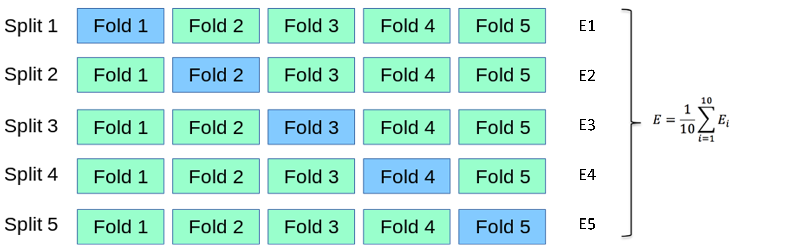
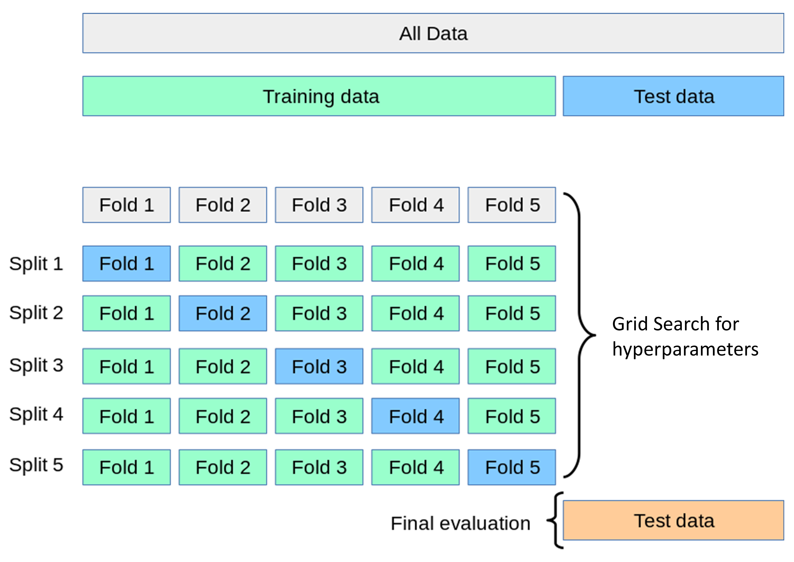

many_splits <- mc_cv(dm_data, prop = 0.80, times = 25, strata = undx_dm)
lr_many <- fit_resamples(lr_wf, many_splits, metrics = metric_set(roc_auc))
collect_metrics(lr_many, summarize = FALSE) |> ggplot(aes(.estimate)) + geom_histogram(bins = 12)Resampling and tuning
06 · Predictive Intelligence in R · Day 2, 10.50–11.50 · Tutorial 5
Vivek Jason Jayaraj · Centre for Population Health, Universiti Malaya
2026-11-12
This morning’s bake-off, this hour’s question
This morning you ranked four model families on five folds. Two questions were left hanging:
- How much should we trust a number like “AUC 0.853”? (Resampling.)
- Every model was run on guessed settings. What are the right ones? (Tuning.)
Both answers come from the same tool: fitting the model many times on data it has not seen.
Why one split lies
The same model, 25 random splits
- Nothing changed except which 1,000 people were held out. Test AUC ranges from ~0.80 to ~0.88.
- Any single number in that range is a legitimate “test-set AUC”. A paper that reports 0.88 is not lying — it is reporting one draw from a distribution and calling it the answer.
- With ~115 cases in a test set, that spread is unavoidable. Smaller test sets are worse.
Report mean ± standard error across resamples. collect_metrics() gives you both. The SE is the number that tells you whether two models actually differ.
The resampling menu
| Scheme | rsample |
How | Use when |
|---|---|---|---|
| k-fold CV | vfold_cv(v = 10) |
k equal folds; each held out once | the default for comparison and tuning |
| Repeated k-fold | vfold_cv(v = 10, repeats = 5) |
k-fold, shuffled r times | you can afford it; lowers variance of the estimate |
| Stratified | strata = outcome |
folds keep class balance | always, for outcomes under ~30 % |
| Monte-Carlo CV | mc_cv(times = 25) |
repeated random splits | quick variance check |
| Bootstrap | bootstraps(times = 25) |
sample with replacement; OOB = assessment | small n; confidence intervals (int_pctl()) |
| Leave-one-out | loo_cv() |
n folds | tiny n; high variance; rarely worth it |
| Grouped | group_vfold_cv(group = patient_id) |
whole clusters held out together | repeated measures, multi-site |
| Rolling origin | sliding_period(), rolling_origin() |
train on past, assess on future | time series, forecasting |
| Validation set | initial_validation_split() |
one fixed assessment set | n in the millions; deep learning |
| Nested CV | outer vfold_cv + inner tuning |
tune inside each outer fold | unbiased estimate of a tuned pipeline (see later) |
k-fold, pictured

Five or ten? 10-fold has less bias (90 % of data per fit); 5-fold is twice as fast and fine for tuning big grids. We use 5 in the workshop for time; use 10 (repeated) in your paper.
Jian et al. (2022)
What happens inside one fold
- Imputation medians, scaling, dummy levels, SMOTE, feature selection — everything estimated from data is estimated on the analysis set only, five separate times.
- This is why pre-processing lives in a recipe inside a workflow and not in a
mutate()before the split. Amutate()that uses the whole data set has already leaked. - The same discipline applies to variable selection: selecting predictors on the full data and then cross-validating the model is the classic way to get an optimistic AUC (Ambroise & McLachlan 2002).
Tuning
Parameters vs hyperparameters
- Parameters are learned from data by
fit(): regression coefficients, split points, network weights. - Hyperparameters are set before fitting and control how flexible the model may be:
mtry,min_n,tree_depth,learn_rate,penalty,cost,rbf_sigma,neighbors,hidden_units,epochs.
Each hyperparameter is a position on the bias–variance curve. Tuning = finding the sweet spot empirically, on resamples.
tune() is a placeholder. The workflow still works; it just cannot be fit() until the placeholders are filled.
Grid search

For each candidate setting → k-fold CV → average metric. Pick the best. Cost = candidates × folds model fits.
Jian et al. (2022)
Defining the search space: dials
- Every tunable argument has a
dialsobject with a default range and, where sensible, a log transform (learn_rate,penalty,cost,rbf_sigma,loss_reduction). Tune those on the log scale or you waste 90 % of the grid on one end. - Defaults are deliberately wide. Narrow them with domain sense — a learning rate of 10⁻¹⁰ is not a candidate.
- Ranges that depend on the data (
mtry≤ number of predictors) needfinalize(mtry(), x = baked_predictors)or an explicitupdate().
Regular vs space-filling grids

With 4+ parameters, a regular grid explodes and still only tries a few values per parameter. Space-filling (Latin hypercube / max-entropy) spreads a fixed budget evenly. tune_grid(grid = 20) builds one for you.
Smarter than a grid
| Strategy | Function | Idea | When |
|---|---|---|---|
| Random search | grid_random() |
sample candidates at random | cheap, surprisingly good |
| Racing | finetune::tune_race_anova() |
after a few folds, drop candidates that are already significantly worse | default choice: same answer as a full grid at a fraction of the cost |
| Bayesian optimisation | tune_bayes() |
fit a model of metric ~ hyperparameters, propose the next most promising candidate | expensive models, few evaluations |
| Simulated annealing | finetune::tune_sim_anneal() |
local random walk that sometimes accepts worse moves | refining around a good region |
Reading the results
Two ways to pick:
The one-standard-error rule (Breiman 1984): among candidates whose score is within one SE of the best, choose the simplest. Simpler = less overfit, faster, easier to explain, and the “best” was probably best by luck anyway.
Finalise, then — and only then — the test set
xgb_final_wf <- finalize_workflow(xgb_tune_wf, select_best(xgb_race, metric = "roc_auc"))
xgb_last <- last_fit(xgb_final_wf, split = dm_split, metrics = cls_metrics)
collect_metrics(xgb_last) # test-set metrics, one shot
collect_predictions(xgb_last) # test-set predictions, for curves and thresholds
extract_workflow(xgb_last) # the fitted workflow: save it, deploy itlast_fit()fits on all training data and predicts the test set in one call. It is the only function in the workshop that touchesdm_test.- If CV says 0.86 and the test says 0.80, something is wrong (leak in CV, distribution shift, bad luck with 115 cases). Investigate; do not re-tune on the test set.
Parallel processing (it changed)
tune≥ 1.3 uses the future (or mirai) framework.doParallel::registerDoParallel()from older tutorials does nothing now.- Each worker needs memory for a copy of the data; on an 8 GB laptop stop at 3–4 workers.
rangerandxgboostare multi-threaded themselves; parsnip pins them to 1 thread inside parallel tuning so they do not fight.- Seeds:
set.seed()before the call gives reproducible results, sequential or parallel.
Nested cross-validation (when you need it)
Tuning on 5 folds and then reporting the best CV score is slightly optimistic — you picked the maximum of 20 noisy numbers.
- Usually small (0.005–0.01 AUC) and the locked test set catches it. That is its job.
- With small n, many candidates, or when there is no test set: nested CV — an outer loop of folds, and inside each outer analysis set a complete inner tuning. The outer assessment sets give an unbiased estimate of the whole procedure.
- Cost: outer × inner × candidates model fits. tidymodels supports it via
nested_cv()and a littlepurrr; TMwR has a worked chapter.
For a thesis: tune with repeated 10-fold, report the test set. For a methods paper or n < 500: nested CV.
Reporting what you did
TRIPOD+AI asks for, and reviewers increasingly check:
- resampling scheme (k, repeats, stratification), seeds
- which hyperparameters, what ranges, how searched, how selected (best vs 1-SE)
- the CV estimate with SE and the test estimate — and that the test set was used once
- performance by subgroup (sex, ethnicity, age band) —
collect_predictions() |> group_by(...) |> roc_auc(...) - confidence intervals:
int_pctl(xgb_last, metrics = cls_metrics)bootstraps the test predictions
→ Tutorial 5 (tutorials/05_tuning.qmd)
Live coding: 25 random splits; the resampling menu; tune() + dials; grid vs space-filling; racing; the one-SE rule; finalize_workflow() → last_fit() — the test set, once.
Your turn: race-tune the random forest; apply the one-SE rule by hand; compare how many candidates survive vs XGBoost.
Predictive Intelligence in R · CePH Series 5 · Nov 2026